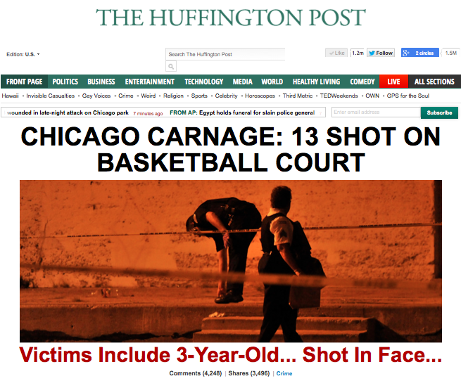

One year ago...
"Jesus Christ, 10-4." the dispatcher said, in response to learning that 10 adults and a three year-old were shot in Cornell Square Park. The calls started pouring in just after 10pm, and by 10:15pm multiple ambulances were rushing to the scene at 1801 West 51st Street. The count kept rising as the calls came in and emergency personnel arrived at the scene. The Chicago Fire Department declared an EMS Plan 2 to be put into place for the shooting, and by the time all the victims had arrived at area hospitals the final count was 13.
Ages of the victims ranged from 3 to 41 years old, with wounds all over. The little boy had a gunshot wound to the head. Medical professionals worked tirelessly to save each victim, and miraculously nobody died from their physical injuries. But the damage had been done.
The next morning, national news converged on Chicago, with headlines such as "CHICAGO CARNAGE: 13 SHOT ON BASKETBALL COURT". Some referred to Chicago as "Chiraq" due to the amount of gun violence going on in the city. Slowly, the media coverage became less frequent, with occasional stories popping up as the perpretrators of the shooting were apprehended and charged.
That day, September 19th, 2013, of what has been come to be known as the "Cornell Square Park Shooting", has faded from Chicagoans' minds. One year later, not much has changed. At the time of this writing, at least six people have either been shot or stabbed in a 30 minute timespan, lining this weekend up for another round of violence.
Given this level of violence, why has not much changed? Have we dismissed the persistent violence as an unsolvable problem? That it is just a "south side problem" or a "west side problem" and the rest of the city should not care? As Patricia Mack and many other residents point out, "this stuff needs to stop."
One year since that fateful day, I pledge to help stop it.
How? Read on to find out.